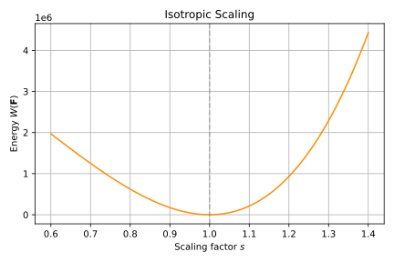
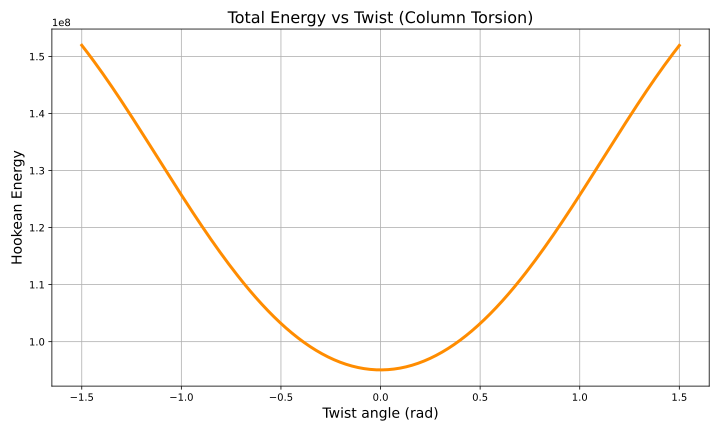

The Hookean elastic model describes linear elastic behavior of materials through a direct proportionality between stress and strain. Hooke’s law states:
\(\mathbf{S}\) is the stress tensor (force per unit area).
\(\mathbf{C}\) is the fourth-order elasticity tensor encoding material stiffness.
\(\boldsymbol{\varepsilon}\) is the Green-Lagrange strain tensor defined as:
This relation holds as long as the deformation remains small, meaning the material stays near its rest configuration (:math:|boldsymbol{varepsilon}| ll 1). This small-strain assumption defines what is often referred to as the Hookean regime.
Let’s assume we are in the case of Hooke’s regime where \(\mathbf{F}\) is a small perturbation of the identity matrix, i.e., \(x^{t+1} = F x^t\) where \(\mathbf{F} = \mathbf{I} + \nabla \mathbf{u}\). In this case, we can approximate the strain tensor as:
where \(\mathrm{tr}(\boldsymbol{\varepsilon})\) is the trace of the strain tensor, and \(\|\boldsymbol{\varepsilon}\|^2\) is the Frobenius norm of the strain tensor.
where \(\varepsilon_{ij} = \frac{1}{2}(\partial_i u_j + \partial_j u_i)\).
Here,
the terms \(\varepsilon_{ii}\) represent the energy contribution from normal (axial) strain along the coordinate axes,
the mixed terms \(\varepsilon_{ii} \varepsilon_{jj}\) represent the coupling between normal strains along different axes, contributing to the energy associated with volumetric deformation,
the terms \(\varepsilon_{ij}^2\) represent the energy contribution from shear strain in the \((i, j)\) plane, penalizing angular distortions between coordinate directions.
The Hookean model predicts a quadratic energy response with respect to the strain tensor \(\boldsymbol{\varepsilon}\) for small deformations, as the energy potential is of the form:
To validate this behavior in practice, we simulate several canonical deformations and plot the total elastic energy as a function of the deformation parameter.
We first start with the most simple deformation non-zero energy mode that can be expressed as an affine transformation, i.e., isotropic scaling.
The isotropic scaling deformation is defined as:
\[\begin{split}\mathbf{F} = s \cdot \mathbf{I} = \begin{bmatrix} s & 0 \\ 0 & s \end{bmatrix}\end{split}\]
As we can see, the components of the strain tensor are quadratic in the scaling factor \(s\). We then expect the elastic energy potential to be a quartic function of \(s\). We can then give an expression of the elastic energy potential as:
\[W(s) = \frac{\lambda + \mu}{2}(s^2 - 1)^2\]
where \(\lambda\) and \(\mu\) are the Lamé parameters.
This means that the energy potential is a quartic function of the scaling factor \(s\), and a quadratic function of the strain tensor \(\boldsymbol{\varepsilon}\).

We also investigate 3D deformation modes that cannot be expressed as simple affine transformations, such as torsion and bending. These deformations are nonuniform but can still be analyzed under the Hookean regime by computing the Green–Lagrange strain pointwise.
We define the twisting deformation around the Z-axis with its deformation gradient as:
Here, the deformation being nonuniform, the strain tensor is also given pointwise. We see that it is quadratic in the parameter \(\theta_{\text{twist}}\), we then expect the elastic energy potential to be a quartic function of \(\theta_{\text{twist}}\).
We can then give a pointwise expression of the elastic energy potential as:
As expected, the energy potential is a quartic function of the twist angle \(\theta_{\text{twist}}\), and a quadratic function of the strain tensor \(\boldsymbol{\varepsilon}\).
If we compute the sum of the elastic energy potential over the whole column with finite elements, we obtain the total elastic energy profile:

that looks quadratic.
Description of standard deformations and their energies
Isotropic scaling
Description: Uniform expansion or compression in all directions
Deformation gradient:
\[\begin{split}\mathbf{F} = s \cdot \mathbf{I} = \begin{bmatrix} s & 0 \\ 0 & s \end{bmatrix}\end{split}\]
Let’s now see what happens in the other cases of Hooke’s regime, i.e., when the deformation is a rigid rotation or a rigid translation.
For a rigid translation, \(x^{t+1} = x^t + \mathbf{u}\). In this case, the deformation gradient is simply the identity matrix, and the strain tensor is zero.
For a rigid rotation, \(x^{t+1} = R x^t\) where \(R\) is a rotation matrix. In this case, the deformation gradient is \(R\), and the strain tensor is again zero.
These deformations are called zero-energy modes because they do not contribute to the energy potential.
Rigid translations and rotations do not produce strain and therefore store no elastic energy.
They form the set of deformation modes that lie entirely within the nullspace of the elastic energy. A well-defined Hookean model must be invariant under these transformations.